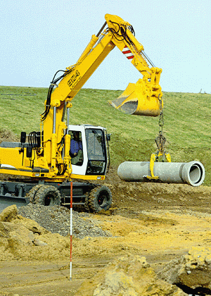

Bagger im Hebezeugeinsatz
Hebezeugeinsatz ist, wenn Lasten mit dem Bagger gehoben, geführt oder abgesenkt werden.
Zu unterscheiden sind


Hebezeugeinsatz ist, wenn Lasten mit dem Bagger gehoben, geführt oder abgesenkt werden.
Zu unterscheiden sind